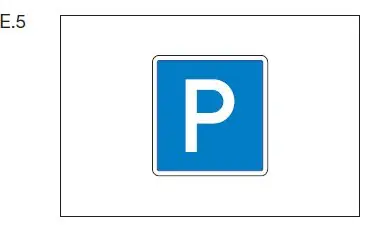
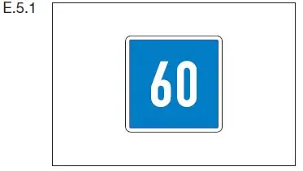
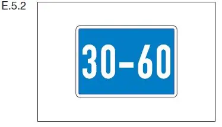
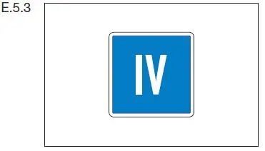

§ 7.05 Liegestellen
Binnenschifffahrtsstraßen-Ordnung
1. | Auf einer Liegestelle, bei der das Tafelzeichen E.5 (Anlage 7) aufge- stellt ist, darf ein Fahrzeug oder ein Schwimmkörper nur auf der Sei- te der Wasserstraße stillliegen, auf der das Tafelzeichen steht. |  |
2. | Auf einer Liegestelle, bei der das Tafelzeichen E.5.1 (Anlage 7) aufge- stellt ist, darf ein Fahrzeug oder ein Schwimmkörper nur auf einer Wasserfläche stillliegen, deren Breite auf dem Tafelzeichen in Me- tern angegeben ist. Die Breite bemisst sich vom Aufstellungsort des Tafelzeichens. |  |
3. | Auf einer Liegestelle, bei der das Tafelzeichen E.5.2 (Anlage 7) aufge- stellt ist, darf ein Fahrzeug oder ein Schwimmkörper nur auf der Wasserfläche zwischen den zwei Entfernungen stillliegen, die auf dem Tafelzeichen in Metern angegeben sind. Beide Entfernungen bemessen sich vom Aufstellungsort des Tafelzeichens. |  |
4. | Auf einer Liegestelle, bei der das Tafelzeichen E.5.3 (Anlage 7) aufge- stellt ist, dürfen auf der Seite der Wasserstraße, auf der das Tafelzeichen steht, nicht mehr Fahrzeuge und Schwimmkörper nebeneinander stillliegen, als auf dem Tafelzeichen in römischen Zahlen angegeben ist. |  |